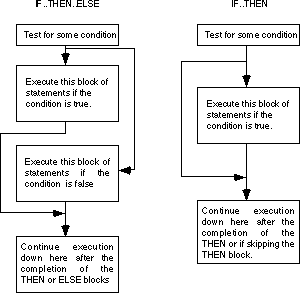

| Table of Content | Chapter Ten (Part 2) |
|
| Table of Content | Chapter Ten (Part 2) |
|
| CHAPTER
TEN: CONTROL STRUCTURES (Part 1) |
||
| 10.0 -
Chapter Overview 10.1 - Introduction to Decisions 10.2 - IF..THEN..ELSE Sequences 10.3 - CASE Statements 10.4 - State Machines and Indirect Jumps 10.5 - Spaghetti Code 10.6 - Loops 10.6.1 - While Loops 10.6.2 - Repeat..Until Loops 10.6.3 - LOOP..ENDLOOP Loops 10.6.4 - FOR Loops 10.7 - Register Usage and Loops 10.8 - Performance Improvements 10.8.1 - Moving the Termination Condition to the End of a Loop 10.8.2 - Executing the Loop Backwards 10.8.3 - Loop Invariant Computations 10.8.4 - Unraveling Loops 10.8.5 - Induction Variables 10.8.6 - Other Performance Improvements 10.9 - Nested Statements 10.10 - Timing Delay Loops 10.11 - Sample Program |
Copyright 1996 by Randall Hyde
All rights reserved. Duplication other than for immediate display through a browser is prohibited by U.S. Copyright Law. This material is provided on-line as a beta-test of this text. It is for the personal use of the reader only. If you are interested in using this material as part of a course, please contact rhyde@cs.ucr.edu Supporting software and other materials are available via anonymous ftp from ftp.cs.ucr.edu. See the "/pub/pc/ibmpcdir" directory for details. You may also download the material from "Randall Hyde's Assembly Language Page" at URL: http://webster.ucr.edu Notes: This document does not contain the laboratory exercises, programming assignments, exercises, or chapter summary. These portions were omitted for several reasons: either they wouldn't format properly, they contained hyperlinks that were too much work to resolve, they were under constant revision, or they were not included for security reasons. Such omission should have very little impact on the reader interested in learning this material or evaluating this document. This document was prepared using Harlequin's Web Maker 2.2 and Quadralay's Webworks Publisher. Since HTML does not support the rich formatting options available in Framemaker, this document is only an approximation of the actual chapter from the textbook. If you are absolutely dying to get your hands on a version other than HTML, you might consider having the UCR Printing a Reprographics Department run you off a copy on their Xerox machines. For details, please read the following EMAIL message I received from the Printing and Reprographics Department:
We are currently working on ways to publish this text in a form other than HTML (e.g., Postscript, PDF, Frameviewer, hard copy, etc.). This, however, is a low-priority project. Please do not contact Randall Hyde concerning this effort. When something happens, an announcement will appear on "Randall Hyde's Assembly Language Page." Please visit this WEB site at http://webster.ucr.edu for the latest scoop. Redesigned 10/2000 with "MS FrontPage 98" using
17" monitor 1024x768 |
|
A computer program typically contains three structures:
instruction sequences, decisions, and loops. A sequence is a set of sequentially executing
instructions. A decision is a branch (goto) within a program based upon some
condition. A loop is a sequence of instructions that will be repeatedly executed based on
some condition. In this chapter we will explore some of the common decision structures in
80x86 assembly language.
This chapter discusses the two primary types of control
structures: decision and iteration. It describes how to convert high level language
statements like if..then..else, case (switch), while,
for etc., into equivalent assembly language sequences. This chapter also discusses
techniques you can use to improve the performance of these control structures. The
sections below that have a "*" prefix are essential. Those sections with a
"o" discuss advanced topics that you may want to put off for a while.
* Introduction to Decisions.
* IF..THEN..ELSE Sequences.
* CASE Statements.
o State machines and indirect jumps.
* Spaghetti code.
* Loops.
* WHILE Loops.
* REPEAT..UNTIL loops.
* LOOP..ENDLOOP.
* FOR Loops.
* Register usage and loops.
o Performance improvements.
o Moving the termination condition to the end of a loop.
o Executing the loop backwards.
o Loop invariants.
o Unraveling loops.
o Induction variables.
In its most basic form, a decision is some sort of branch
within the code that switches between two possible execution paths based on some
condition. Normally (though not always), conditional instruction sequences are implemented
with the conditional jump instructions. Conditional instructions correspond to the if..then..else
statement in Pascal:
IF (condition is true) THEN stmt1 ELSE stmt2 ;
Assembly language, as usual, offers much more flexibility when dealing with conditional statements. Consider the following Pascal statement:
IF ((X<Y) and (Z > T)) or (A <> B) THEN stmt1;
A "brute force" approach to converting this statement into assembly language might produce:
mov cl, 1 ;Assume true
mov ax, X
cmp ax, Y
jl IsTrue
mov cl, 0 ;This one's false
IsTrue: mov ax, Z
cmp ax, T
jg AndTrue
mov cl, 0 ;It's false now
AndTrue: mov al, A
cmp al, B
je OrFalse
mov cl, 1 ;Its true if A <> B
OrFalse: cmp cl, 1
jne SkipStmt1
<Code for stmt1 goes here>
SkipStmt1:
As you can see, it takes a considerable number of conditional statements just to process the expression in the example above. This roughly corresponds to the (equivalent) Pascal statements:
cl := true;
IF (X >= Y) then cl := false;
IF (Z <= T) then cl := false;
IF (A <> B) THEN cl := true;
IF (CL = true) then stmt1;
Now compare this with the following "improved" code:
mov ax, A
cmp ax, B
jne DoStmt
mov ax, X
cmp ax, Y
jnl SkipStmt
mov ax, Z
cmp ax, T
jng SkipStmt
DoStmt:
<Place code for Stmt1 here>
SkipStmt:
Two things should be apparent from the code sequences above: first, a single conditional statement in Pascal may require several conditional jumps in assembly language; second, organization of complex expressions in a conditional sequence can affect the efficiency of the code. Therefore, care should be exercised when dealing with conditional sequences in assembly language.
Conditional statements may be broken down into three basic
categories: if..then..else statements, case statements, and
indirect jumps. The following sections will describe these program structures, how to use
them, and how to write them in assembly language.
The most commonly used conditional statement is theif..then
or if..then..else statement. These two statements take the following
form shown below:

The if..then statement is just a special case
of the if..then..else statement (with an empty ELSE block). Therefore, we'll
only consider the more general if..then..else form. The basic implementation
of an if..then..else statement in 80x86 assembly language looks something
like this:
{Sequence of statements to test some condition}
Jcc ElseCode
{Sequence of statements corresponding to the THEN block}
jmp EndOfIF
ElseCode:
{Sequence of statements corresponding to the ELSE block}
EndOfIF:
Note: Jcc represents some conditional jump
instruction.
For example, to convert the Pascal statement:
IF (a=b) then c := d else b := b + 1;
to assembly language, you could use the following 80x86 code:
mov ax, a
cmp ax, b
jne ElseBlk
mov ax, d
mov c, ax
jmp EndOfIf
ElseBlk:
inc b
EndOfIf:
For simple expressions like (A=B) generating
the proper code for an if..then..else statement is almost trivial. Should the
expression become more complex, the associated assembly language code complexity increases
as well. Consider the following if statement presented earlier:
IF ((X > Y) and (Z < T)) or (A<>B) THEN C := D;
When processing complex if statements such as
this one, you'll find the conversion task easier if you break this if statement
into a sequence of three different if statements as follows:
IF (A<>B) THEN C := D IF (X > Y) THEN IF (Z < T) THEN C := D;
This conversion comes from the following Pascal equivalences:
IF (expr1 AND expr2) THEN stmt;
is equivalent to
IF (expr1) THEN IF (expr2) THEN stmt;
and
IF (expr1 OR expr2) THEN stmt;
is equivalent to
IF (expr1) THEN stmt; IF (expr2) THEN stmt;
In assembly language, the former if statement
becomes:
mov ax, A
cmp ax, B
jne DoIF
mov ax, X
cmp ax, Y
jng EndOfIf
mov ax, Z
cmp ax, T
jnl EndOfIf
DoIf:
mov ax, D
mov C, ax
EndOfIF:
As you can probably tell, the code necessary to test a
condition can easily become more complex than the statements appearing in the else and
then blocks. Although it seems somewhat paradoxical that it may take more effort to test a
condition than to act upon the results of that condition, it happens all the time.
Therefore, you should be prepared for this situation.
Probably the biggest problem with the implementation of
complex conditional statements in assembly language is trying to figure out what you've
done after you've written the code. Probably the biggest advantage high level languages
offer over assembly language is that expressions are much easier to read and comprehend in
a high level language. The HLL version is self-documenting whereas assembly language tends
to hide the true nature of the code. Therefore, well-written comments are an essential
ingredient to assembly language implementations of if..then..else statements.
An elegant implementation of the example above is:
; IF ((X > Y) AND (Z < T)) OR (A <> B) THEN C := D;
; Implemented as:
; IF (A <> B) THEN GOTO DoIF;
mov ax, A
cmp ax, B
jne DoIF
; IF NOT (X > Y) THEN GOTO EndOfIF;
mov ax, X
cmp ax, Y
jng EndOfIf
; IF NOT (Z < T) THEN GOTO EndOfIF ;
mov ax, Z
cmp ax, T
jnl EndOfIf
; THEN Block:
DoIf: mov ax, D
mov C, ax
; End of IF statement
EndOfIF:
Admittedly, this appears to be going overboard for such a simple example. The following would probably suffice:
; IF ((X > Y) AND (Z < T)) OR (A <> B) THEN C := D;
; Test the boolean expression:
mov ax, A
cmp ax, B
jne DoIF
mov ax, X
cmp ax, Y
jng EndOfIf
mov ax, Z
cmp ax, T
jnl EndOfIf
; THEN Block:
DoIf: mov ax, D
mov C, ax
; End of IF statement
EndOfIF:
However, as your if statements become complex,
the density (and quality) of your comments become more and more important.
| Table of Content | Chapter Ten (Part 2) |
|
Chapter Ten: Control Structures (Part
1)
27 SEP 1996